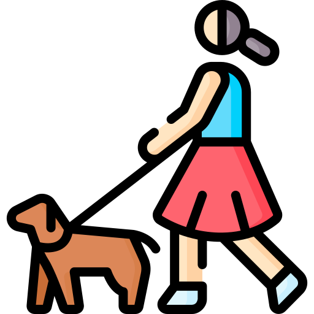
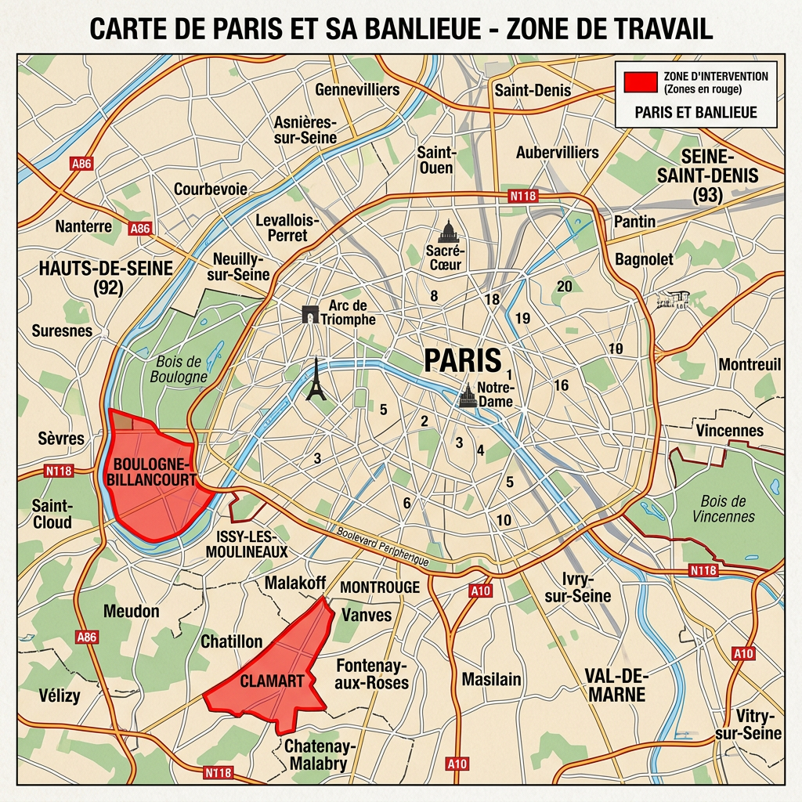

Pet sitter à Clamart · certifiée ACACED
Confiez-nous vos compagnons à quatre pattes ! 🐾
Que ce soit votre chien, votre chat ou votre petit rongeur, nous prenons soin d'eux avec amour et attention. Garde, promenades, câlins garantis… vos animaux sont entre de bonnes mains et repartent avec le sourire ! 🐶🐱
Mes services

GARDE À DOMICILE 🏠
Vous partez en vacances ou avez une longue journée ? Amenez-nous votre chien, chat ou petit rongeur et profitez l'esprit tranquille. Ici, vos animaux sont chouchoutés, stimulés et entourés d'amour. 🐶🐱🐹
Dès 5€/jour

PROMENADES 🌿
Vous manquez de temps pour promener votre chien ? On s'en occupe ! On l'emmène se dépenser, explorer, renifler tous les coins... bref, il profite d'une belle sortie bien ressourçante. 🐶🌿
Dès 10 € la sortie

VISITES À DOMICILE 🏠
Votre chat ou votre rongeur préfère rester dans son environnement ? Pas de problème, c'est nous qui nous déplaçons ! Nourrissage, jeux et câlins, chez vous. 🐱🐹🏠
Dès 10 € le passage
À propos

Moi c'est Samantha
Les animaux ont toujours fait partie de ma vie ! Depuis toute petite, je suis entourée d'eux et ma passion n'a jamais cessé de grandir. Pour vous offrir le meilleur des services, j'ai obtenu l'ACACED, le certificat reconnu pour la prise en charge des chiens, chats et NAC.
Chez moi à Clamart, votre compagnon est traité comme un membre de la famille : jeux, câlins, sorties et beaucoup d'attention.
🎓 Titulaire de l'ACACED · chiens, et NAC
Mes Tarifs
Des prix simples, sans surprise
Pas de frais de plateforme, pas de commission : vous réglez directement le tarif affiché.
🏠 GARDE À DOMICILE
Votre animal vit chez nous, comme à la maison
NAC (rongeur, lapin...)
5€/jour
--------------------------------
Chien petit gabarit :
15€/jour
--------------------------------
Chien grand gabarit :
25€/jour
--------------------------------
Chat :
10€/jour
🌿 PROMENADES
Sorties adaptées au rythme de votre chien
30 minutes
10€
--------------------------------
45 minutes
15€
--------------------------------
1 heure
20€
VISITES À DOMICILE 🏠
Nourrissage, jeux et câlins chez vous
NAC
10€/passage
--------------------------------
Chat
15€/passage
Comment ça se passe
Trois étapes, zéro stress !
1
On échange
Envoyez-nous un message WhatsApp ou appelez-nous : dates, animal, habitudes. On vous répond vite.
2
On se rencontre
Une rencontre gratuite avec votre animal pour faire connaissance et vérifier que le courant passe.
3
Vous partez tranquille
Pendant la garde, vous recevez des photos et des nouvelles tous les jours sur WhatsApp
Ma galerie
Nos pensionnaires en vacances
Quelques photos des compagnons qui nous ont fait confiance.

.jpg)


Secteur d'activité
Où nous trouver ?
 Garde à domicile et promenades :
Garde à domicile et promenades :
Clamart (92140) et alentours

Visites à domicile :Boulogne-Billancourt et proches communes des Hauts-de-Seine
Vous êtes juste à coté ? Demandez-nous, on se déplace peut-être chez vous aussi.

Questions Fréquentes
Tout ce que vous vous demandez
Quels animaux acceptez-vous ?
Les chiens (petits et grands gabarits), les chats et les NAC : lapins, rongeurs, etc. En cas de doute sur votre compagnon, envoyez-nous un message, on vous répond vite.
Comment se passe la première rencontre ?
Avant toute garde, on organise une rencontre gratuite et sans engagement avec vous et votre animal. C'est l'occasion de faire connaissance, de nous transmettre ses habitudes et de vérifier qu'il se sent bien.
Aurai-je des nouvelles pendant la garde ?
Oui, tous les jours ! Vous recevez photos et petites nouvelles sur WhatsApp pour partir l'esprit vraiment tranquille.
Que dois-je prévoir pour une garde à domicile ?
Sa nourriture habituelle, son carnet de santé, et ce qui le rassure : panier, jouets, couverture. Le reste, on s'en occupe.
Comment réserver ?
Le plus simple : un message WhatsApp avec vos dates et le type d'animal. Vous pouvez aussi nous appeler ou envoyer un SMS au 06 69 14 45 84.
Pourquoi me choisir ?
Certifiée ACACED
Chiens & NAC
Rencontre gratuite
avant toutes réservations

Photos chaque jour
des nouvelles sur WhatsApp
.png)
En direct
sans frais de plateforme
Mon Contact
🐾 Une question ? Envie de planifier une garde pour votre compagnon ? N'hésitez pas à me contacter, je me ferai un plaisir d'échanger avec vous !
Joubrelsamantha03@gmail.com
Numéro de Téléphone
06 69 14 45 84